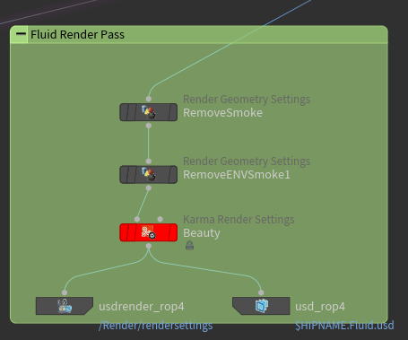

← 部落格 × Harbour
Bomin Kim（特效）


第 8 週
團隊成員
3 月 1 日
Bomin Kim（特效）
Caleb Stovall（3D／2D）
Mojie Tang（特效）
Sydney Relkin（合成）
Yiqi Zheng（特效）
SCAD × HARBOR － 第 8 週
大家好，這是我 SCAD × Harbor 部落格的第八週！
導師回饋：
Luke：
-
鏡頭 1：加強景深（加入顆粒、細微的曝光光暈）
Hailey：
- 鏡頭 1：背景失焦／前景清晰
- 鏡頭 1：火花是黑色的，看不出是火花
- 鏡頭 6：方形反射感覺怪怪的／燈光有進步
- 鏡頭 2／3：地板材質太平
Kyle：
-
鏡頭 1：修正爐口邊緣的稜角
-
背景到前景的模糊需要改善
-
火焰沒有融入畫面：藍光、鏡頭上的熱光暈、熱霧
-
火花應該要發光
-
在鏡頭 1 結尾加入攝影機運動
-
鏡頭 5／6：更多景深
-
修改 logo，要更現代
-
影片輸出 23.98 fps，不是 30 fps
鏡頭 2 和 3 我更換了地板材質並加大 displacement，現在看起來不再那麼平。
這週我主要協助 Caleb 算出不同的 pass 給合成用。我把場景拆成六個部分，讓 Nuke 中的控制更有彈性，並用 Render Geometry Settings 分離出需要的物件。

環境煙霧的部分，需要底部的鍋子把它擋住，所以要加一個 matte。這是 pass 的樣子。
另一個算圖上的麻煩是記憶體有限，存檔時一直當機。所以我先把不同物件分開，再依影格範圍拆分 USD 檔，這樣輸出就順利了。